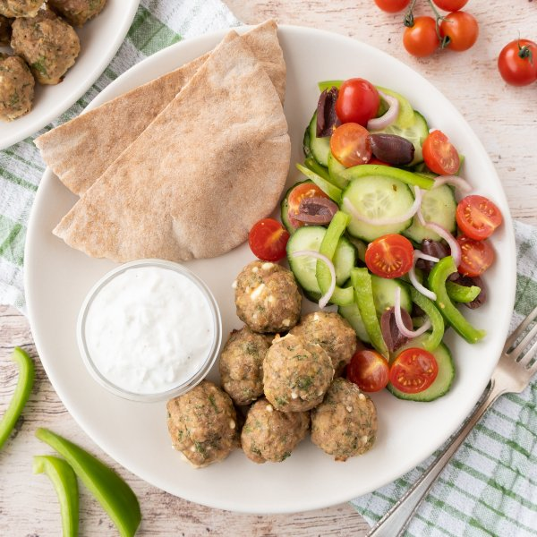

Greek Turkey Meatball Pita Wraps with Veggies, Olives & Feta Sauce

Total Time
40 min
Nutrition (per serving)
687.4 kcalCalories
53.6 gProtein
53.1 gCarbs
30.8 gFat
Full nutrition table
| Calories | 687.4 kcal |
| Total fat | 30.8 g |
| Saturated fat | 9.5 g |
| Trans fat | 0.5 g |
| Cholesterol | 226.4 mg |
| Sodium | 886.1 mg |
| Carbohydrates | 53.1 g |
| Fiber | 8.1 g |
| Sugars | 8.2 g |
| Protein | 53.6 g |
| Potassium | 1052.4 mg |
| Calcium | 298.2 mg |
| Iron | 6.2 mg |
| Vitamin A | 1697.8 IU |
| Vitamin C | 43.4 mg |
| Vitamin D | 46.4 IU |
Cookware
Ingredients
- 1 (4 oz) pkgcrumbled feta cheese
- 2eggs
- 1English cucumber
- 1 small bunchfresh dill
- 4 clovesgarlic
- 1 pintgrape tomatoes
- 1green bell pepper
- 1 ½ lbground turkey
- ¼ cupKalamata olives, pitted
- ⅔ cupplain Greek yogurt
- 1shallot
- 4whole grain pitas
- black pepper
- Dijon mustard
- extra virgin olive oil
- oregano, dried
- panko bread crumbs
- red wine vinegar
- salt
Steps
- Preheat oven to 400°F. Coat a large baking dish with a thin layer of oil and set aside.1 tsp extra virgin olive oil
- Wash and dry the fresh produce.1 small bunch fresh dill
1 green bell pepper
1 English cucumber
1 pint grape tomatoes - Using a knife, shave dill leaves off the stems; discard stems and mince the leaves. Place in a medium bowl.
- Peel and mince garlic. Add to the bowl with the dill along with turkey, eggs, half the feta (reserving the rest for the yogurt sauce), bread crumbs, Dijon, and spices; mix with your hands until well combined.2 cloves garlic
1 ½ lb ground turkey
2 eggs
1 (4 oz) pkg crumbled feta cheese
⅓ cup panko bread crumbs
2 tsp Dijon mustard
2 tsp oregano, dried
½ tsp salt
½ tsp black pepper - Using a rounded tablespoon measure, form the meat mixture into meatballs and place in the baking dish. Place meatballs in the oven and bake until cooked through, 15-18 minutes. Remove from oven.
- While the meatballs are baking, peel and mince additional garlic. Place in a small bowl along with remaining feta, yogurt, water, salt, and pepper; whisk to combine the feta sauce. Set aside.2 cloves garlic
⅔ cup plain Greek yogurt
2 tbsp water
¼ tsp salt
¼ tsp black pepper - Place oil, vinegar, and spices in a clean medium bowl. Whisk to combine the dressing.1 tbsp extra virgin olive oil
2 tsp red wine vinegar
¼ tsp oregano, dried
¼ tsp salt
¼ tsp black pepper - Peel, halve, and thinly slice shallot into half-moons. Add to the bowl with the dressing and toss to coat.1 shallot
- Trim, seed, and thinly slice bell pepper. Add to the bowl.
- Trim and thinly slice cucumber crosswise into rounds. Add to the bowl.
- Halve tomatoes and olives. Add both to the bowl and toss to combine the salad.¼ cup Kalamata olives, pitted
- Slice each pita in half and carefully open them using your fingers.4 whole grain pitas
- Divide pita, meatballs, salad, and feta sauce between plates. Fill pitas with fixings and enjoy!